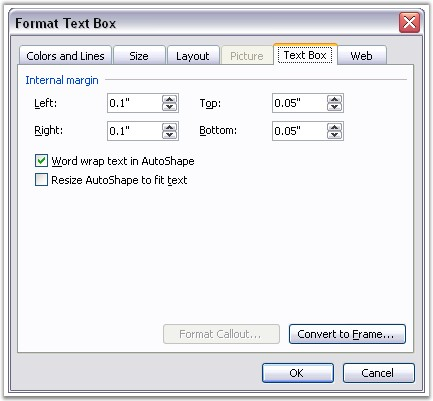

WTextBoxFormat class defines formatting for the Text Box.

Figure 77: Format Text Box Dialog Box
Position
Absolute positioning of text box is defined by using the VerticalPosition and HorizontalPosition properties. Measure unit is point. Relative positioning is defined by using the HorizontalAlignment and VerticalAlignment properties.
HorizontalAlignment returns an object of type, ShapeHorizontalAlignment. The following are the variants for setting the Horizontal alignment of a picture.
· None: no horizontal alignment
· Left: left horizontal alignment
· Center: center horizontal alignment
· Right: right horizontal alignment
· Inside: inside horizontal alignment
· Outside: outside horizontal alignment
VerticalAlignment returns an object of type, ShapeVerticalAlignment. The following are the variants for setting the Vertical alignment of a picture.
· Bottom: picture is aligned to the bottom of the reference origin
· Center: picture is centered relative to the reference origin
· Inline: inline vertical alignment
· Inside: inside vertical alignment
· None: picture is explicitly positioned by using position properties
· Outside: outside vertical alignment
· Top: picture is aligned to the top of the reference origin
HorizontalOrigin and VerticalOrigin properties define the reference origin which is used for relative positioning of the picture.
HorizontalOrigin property returns a value of type, HorizontalOrigin. The following are the variants for setting the Horizontal origin of a picture.
· Margin
· Page
· Column
· Character
VerticalOrigin property returns a value of type, VerticalOrigin. The following are the variants for setting the Vertical origin of a picture.
· Margin
· Page
· Paragraph
· Line
Border Style
You can specify the style of the border line of the text box by using the LineStyle property. It provides the following options.
· Simple
· Double
· ThickThin
· ThinThick
· Triple
Class Hierarchy
FormatBase
|
WTextBoxFormat
Public Constructor
|
Name |
Description |
|
WTextBoxFormat.WTextBoxFormat (IWordDocument) |
Initializes a new instance of the WTextBoxFormat class. |
Public Properties
|
Name |
Description |
|
FillColor |
Gets or sets fill color for textbox. |
|
Height |
Gets or sets the textbox height (in points). |
|
HorizontalAlignment |
Gets or sets horizontal alignment of textbox. |
|
HorizontalOrigin |
Gets or sets horizontal origin. |
|
HorizontalPosition |
Gets or sets the horizontal position of textbox (in points). |
|
LineColor |
Gets or sets line color. |
|
LineDashing |
Gets or sets line dashing for textbox. |
|
LineStyle |
Gets or sets linestyle of textbox. |
|
LineWidth |
Gets or sets the line width of textbox (in points). |
|
NoLine |
Gets or sets value which defines if there is a line around textbox shape. |
|
TextWrappingStyle |
Gets or sets text Wrapping style. |
|
TextWrappingType |
Gets or sets wrapping type for textbox. |
|
VerticalAlignment |
Gets or sets vertical alignment of textbox. |
|
VerticalOrigin |
Gets or sets vertical origin. |
|
VerticalPosition |
Gets or sets the textbox vertical position (in points). |
|
Width |
Gets or sets the textbox width (in points). |
Public Methods
|
Name |
Description |
|
Clone |
Clones textbox format. |
The following example illustrates how to use the WTextBox and TextBoxFormat classes.
|
[C#]
IWordDocument doc = new WordDocument(); IWSection section = doc.AddSection(); IWParagraph paragraph = section.AddParagraph(); section.PageSetup.DifferentFirstPage = true; section.PageSetup.DifferentOddAndEvenPages = true;
// Main doc textboxes paragraph.AppendText("Testing textboxes"); // 1 textbox IWTextBox mainTextbox = paragraph.AppendTextBox(150, 110); mainTextbox.TextBoxBody.AddParagraph().AppendText("Textbox text 1"); mainTextbox.TextBoxFormat.FillColor = System.Drawing.Color.Blue; mainTextbox.TextBoxFormat.LineDashing = LineDashing.LongDashDotDotGEL; mainTextbox.TextBoxFormat.LineWidth = 4.0f; // 2 textbox IWTextBox mainTextbox1 = paragraph.AppendTextBox(150, 100); mainTextbox1.TextBoxFormat.VerticalPosition = 500; mainTextbox1.TextBoxBody.AddParagraph().AppendText("Another textbox"); mainTextbox1.TextBoxFormat.FillColor = System.Drawing.Color.Yellow; mainTextbox1.TextBoxFormat.LineDashing = LineDashing.DashGEL; mainTextbox1.TextBoxFormat.LineWidth = 3.75f; mainTextbox1.TextBoxFormat.TextWrappingStyle = TextWrappingStyle.Through; mainTextbox1.TextBoxFormat.TextWrappingType = TextWrappingType.Both; mainTextbox1.TextBoxFormat.HorizontalAlignment = ShapeHorizontalAlignment.Center; mainTextbox1.TextBoxFormat.VerticalAlignment = ShapeVerticalAlignment.Bottom;
//Header/footer textboxes paragraph = new WParagraph(doc); paragraph.AppendText("Hello textboxes"); IWTextBox textbox = paragraph.AppendTextBox(20, 50); textbox.TextBoxBody.AddParagraph().AppendText("Header textbox"); textbox.TextBoxFormat.FillColor = System.Drawing.Color.Blue; textbox.TextBoxFormat.LineDashing = LineDashing.LongDashDotDotGEL; textbox.TextBoxFormat.LineWidth = 4.0f;
IWTextBox textbox1 = paragraph.AppendTextBox(250, 50); textbox1.TextBoxBody.AddParagraph().AppendText("Header textbox 2"); textbox1.TextBoxFormat.FillColor = System.Drawing.Color.Tomato; textbox1.TextBoxFormat.VerticalPosition = 250; textbox1.TextBoxFormat.LineStyle = TextBoxLineStyle.Triple; textbox1.TextBoxFormat.LineDashing = LineDashing.LongDashGEL; textbox1.TextBoxFormat.LineWidth = 6.0f; textbox1.TextBoxFormat.NoLine = true;
section.HeadersFooters.FirstPageHeader.Paragraphs.Add(paragraph);
paragraph = new WParagraph(doc); paragraph.AppendText("Hello footer textbox"); IWTextBox textbox2 = paragraph.AppendTextBox(120, 100); textbox2.TextBoxFormat.VerticalPosition = 5; textbox2.TextBoxBody.AddParagraph().AppendText("Footer textbox"); textbox2.TextBoxFormat.FillColor = System.Drawing.Color.Yellow; textbox2.TextBoxFormat.LineDashing = LineDashing.DashGEL; textbox2.TextBoxFormat.LineWidth = 3.75f; textbox2.TextBoxFormat.TextWrappingStyle = TextWrappingStyle.Square; textbox2.TextBoxFormat.HorizontalAlignment = ShapeHorizontalAlignment.Left; textbox2.TextBoxFormat.VerticalAlignment = ShapeVerticalAlignment.Bottom; section.HeadersFooters.FirstPageFooter.Paragraphs.Add(paragraph); doc.Save("TextBoxes.doc"); |
|
[VB]
Dim doc As IWordDocument = New WordDocument() Dim section As IWSection = doc.AddSection() Dim paragraph As IWParagraph = section.AddParagraph() section.PageSetup.DifferentFirstPage = True section.PageSetup.DifferentOddAndEvenPages = True
' Main doc textboxes paragraph.AppendText("Testing textboxes")
' 1 textbox Dim mainTextbox As IWTextBox = paragraph.AppendTextBox(150, 110) mainTextbox.TextBoxBody.AddParagraph().AppendText("Textbox text 1") mainTextbox.TextBoxFormat.FillColor = System.Drawing.Color.Blue mainTextbox.TextBoxFormat.LineDashing = LineDashing.LongDashDotDotGEL mainTextbox.TextBoxFormat.LineWidth = 4.0f
' 2 textbox Dim mainTextbox1 As IWTextBox = paragraph.AppendTextBox(150, 100) mainTextbox1.TextBoxFormat.VerticalPosition = 500 mainTextbox1.TextBoxBody.AddParagraph().AppendText("Another textbox") mainTextbox1.TextBoxFormat.FillColor = System.Drawing.Color.Yellow mainTextbox1.TextBoxFormat.LineDashing = LineDashing.DashGEL mainTextbox1.TextBoxFormat.LineWidth = 3.75f mainTextbox1.TextBoxFormat.TextWrappingStyle = TextWrappingStyle.Through mainTextbox1.TextBoxFormat.TextWrappingType = TextWrappingType.Both mainTextbox1.TextBoxFormat.HorizontalAlignment = ShapeHorizontalAlignment.Center mainTextbox1.TextBoxFormat.VerticalAlignment = ShapeVerticalAlignment.Bottom
'Header/footer textboxes paragraph = New WParagraph(doc) paragraph.AppendText("Hello textboxes") Dim textbox As IWTextBox = paragraph.AppendTextBox(20, 50) textbox.TextBoxBody.AddParagraph().AppendText("Header textbox") textbox.TextBoxFormat.FillColor = System.Drawing.Color.Blue textbox.TextBoxFormat.LineDashing = LineDashing.LongDashDotDotGEL textbox.TextBoxFormat.LineWidth = 4.0f
Dim textbox1 As IWTextBox = paragraph.AppendTextBox(250, 50) textbox1.TextBoxBody.AddParagraph().AppendText("Header textbox 2") textbox1.TextBoxFormat.FillColor = System.Drawing.Color.Tomato textbox1.TextBoxFormat.VerticalPosition = 250 textbox1.TextBoxFormat.LineStyle = TextBoxLineStyle.Triple textbox1.TextBoxFormat.LineDashing = LineDashing.LongDashGEL textbox1.TextBoxFormat.LineWidth = 6.0f textbox1.TextBoxFormat.NoLine = True
section.HeadersFooters.FirstPageHeader.Paragraphs.Add(paragraph)
paragraph = New WParagraph(doc) paragraph.AppendText("Hello footer textbox") Dim textbox2 As IWTextBox = paragraph.AppendTextBox(120, 100) Private textbox2.TextBoxFormat.VerticalPosition = 5 textbox2.TextBoxBody.AddParagraph().AppendText("Footer textbox") textbox2.TextBoxFormat.FillColor = System.Drawing.Color.Yellow textbox2.TextBoxFormat.LineDashing = LineDashing.DashGEL textbox2.TextBoxFormat.LineWidth = 3.75f textbox2.TextBoxFormat.TextWrappingStyle = TextWrappingStyle.Square textbox2.TextBoxFormat.HorizontalAlignment = ShapeHorizontalAlignment.Left textbox2.TextBoxFormat.VerticalAlignment = ShapeVerticalAlignment.Bottom section.HeadersFooters.FirstPageFooter.Paragraphs.Add(paragraph) doc.Save("TextBoxes.doc") |